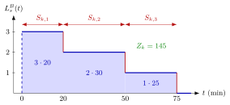

Batch-Arrival Waiting Time¶
Proposition¶
Consider the queue: batches arrive as a Poisson process with rate , batch sizes are i.i.d. copies of , job service times are i.i.d. with mean , batches are served in order of arrival, and each batch moves as a whole to the server. Assume and . Then the mean time a job spends in queue, that is, until its batch reaches the server, is (5.3.4)
where is the squared coefficient of variation of the batch size. Moreover , so .
Interpretation¶
A job arriving with a batch must wait until all work ahead of its batch is done. The formula shows what this waiting depends on: the load , the mean batch size , the variability of the batch size and the mean job service time . Increasing any of them increases , even when stays the same.

The figure shows the key step of the derivation for one batch of jobs with service times , and minutes. During the first service three jobs are at the server, then two, then one, so the area under is job-minutes. In general , with conditional mean , here for . The renewal reward theorem turns the mean area per batch into the time average .
The derivation needs exponential service times: by the memoryless property the job in service still needs on average, so an arriving batch waits . The condition is needed because involves .
For the two terms are equal and add up to the M/M/1 value . A common slip is to drop the factor when is deterministic: then , but reduces to the M/M/1 result only when (TF 5.3.5). The structure, a load factor times a variability factor times a mean, returns in the Pollaczek-Khinchine formula for the M/G/1 queue.
Key Results¶
- Work ahead of a batch (5.3.1). By PASTA for the batches and memorylessness, , where is the waiting time of a batch.
- Little's law for batches (5.3.2). Substituting from Little's law gives , and .
- Jobs at the server (5.3.3). With the area per batch above and batch departure rate , .
- From second moment to SCV. , which turns (5.3.2)–(5.3.3) into (5.3.4).
- Number in the system. .
- Geometric batches (Exercise 5.3.7). For a First Success batch size, for , one has and ; gives the M/M/1 queue.
- Little's law per job (TF 5.3.1). With job arrival rate , .
Examples¶
1. Fixed batches cut the queue (Exercise 5.3.6). Batches arrive at rate per hour and minutes, so with the load is and . If , then and
If is , or with probability each, then , and , so . The ratio is : working with fixed batch sizes reduces , and hence , by , from about to minutes.
2. Geometric batches. Take , so and , at load . Then . With fixed batches at the same load, , and an M/M/1 queue with single arrivals at the same load has . The same job rate and load give queue lengths in the ratio .
3. Batching is not the problem by itself (TF 5.3.2). With per hour, compare single jobs of mean minutes with fixed batches of two jobs of mean minutes. Both have and . Single jobs: hour minutes. Pairs: hour minutes. With and the work per batch fixed, the first term stays the same and only the second, proportional to , changes.
Prerequisites¶
- Batch-Arrival Queue
- Renewal Reward Theorem
- Little's Law
- Squared Coefficient of Variation
- Memoryless Property
Related Concepts¶
- Pollaczek-Khinchine Formula
- Remaining Service Time
- M/M/1 Queue
- Batch Rejection Policy
- Server Setup
- Batch Formation Time
- First Success Distribution
Sources¶
- Stochastic Operations Research · Week 5
- N. D. van Foreest, Sample Path Analysis and Simulation of Stochastic Systems, Section 5.3
Aliases: M^B/M/1 waiting time, MB/M/1 mean waiting time, batch Pollaczek-Khinchine formula, waiting time with batch arrivals, bulk-arrival waiting time Keywords: C_B^2, \mathbb{E}[W]=\frac{1+C_B^2}{2}\frac{\rho}{1-\rho}\mathbb{E}[B]\mathbb{E}[S]+\frac{1}{2}\frac{\rho}{1-\rho}\mathbb{E}[S], batch-size variability, W^B, L_s^B, renewal reward, fixed batch sizes Symbols: infinity, lambda, mu, rho
Last updated: 29 October 2026 20:42
Batch-Arrival Waiting TimeBatch-Arrival QueueRenewal Reward TheoremLittle's LawSquared Coefficient of VariationMemoryless PropertyPollaczek-Khinchine FormulaRemaining Service TimeM/M/1 QueueBatch Rejection PolicyServer SetupBatch Formation TimeFirst Success Distribution